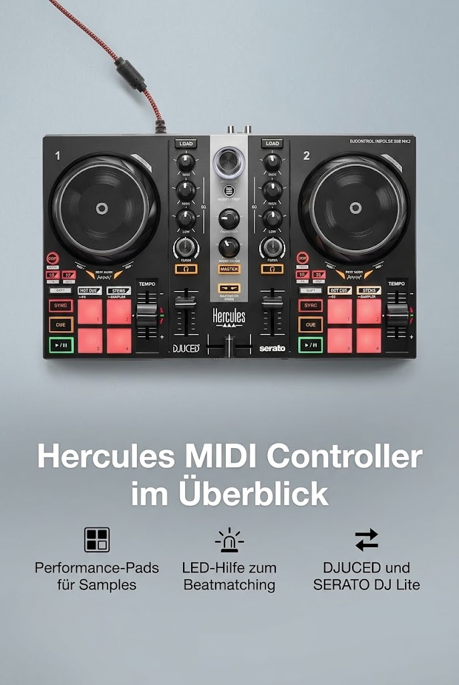

Hercules DJControl Inpulse 200 MK2 – Idealer DJ-Controller zum
Hercules
Hercules DJControl Inpulse 200 MK2 – Idealer DJ-Controller zum Erlernen des Mixens

Angaben des Herstellers
- Verbesserte Funktionen: Das verbesserte Design umfasst reaktionsschnelle Performance-Pads zum Auslösen von Samples, Cues und Effekten und verbessert so Ihre DJ-Fähigkeiten
- LED-Lichtleiter: Integrierte LED-Lichtleiter bieten visuelles Feedback für Beat-Matching und Mixing und helfen Ihnen, mit der Musik synchron zu bleiben
- Duale Softwarekompatibilität: Im Lieferumfang der neuesten DJUCED-Software enthalten und mit SERATO DJ Lite kompatibel, bietet es Flexibilität und professionelle Tools für Ihre Mixing-Anforderungen.
- Kompakt und tragbar: Das kompakte Design erleichtert den Transport und die Einrichtung, ideal zum Üben zu Hause und für Live-Auftritte.
- Benutzerfreundliches Layout: Optimierte Bedienelemente und intuitive Funktionen, die sowohl Anfänger als auch erfahrene DJs unterstützen.
- Vielseitige Konnektivität: Lässt sich einfach über USB mit Ihrem Computer verbinden und ermöglicht so eine zuverlässige und unkomplizierte Einrichtung.
Werbung. Diese Seite enthält Partnerlinks: Als Amazon-Partner verdiene ich an qualifizierten Käufen. Für dich ändert sich nichts am Preis. Preise und Verfügbarkeit stehen bei Amazon und ändern sich laufend.